หมูป่าเขี้ยวตัน · ร่างเขาเงิน
มอนธาตุดิน Lv 16–22
เจอที่
| แมพ | โซน | Lv | ภูมิภาค |
|---|---|---|---|
| เนินดอกไม้กลางคืน | 16–22 | ป่ากองไฟ | |
| เนินดอกไม้กลางคืน | ซุ้มดอกไม้กลางเนิน | 21–22 | ป่ากองไฟ |
| สนามรบเก่ากลางทุ่ง | 16–22 | ป่ากองไฟ | |
| เนินกุหลาบหนาม | 16–22 | ป่ากองไฟ | |
| เนินกุหลาบหนาม | ซุ้มกุหลาบยักษ์ | 21–22 | ป่ากองไฟ |
ค่าสถานะตามเลเวล
| Lv | HP | ATK | DEF | MDEF | EXP | Job |
|---|---|---|---|---|---|---|
| 16 | 3,866 | 45–68 | 9 | 2 | 47 | 35 |
| 19 | 4,225 | 51–76 | 11 | 2 | 53 | 40 |
| 22 | 4,378 | 51–77 | 13 | 3 | 60 | 45 |
ตีด้วยธาตุไหนดี
แรงขึ้น: ไฟ ×1.5 พิษ ×1.25
เบาลง: ลม ×0.5 ดิน ×0.25
วัตถุดิบที่ดรอป
| ของ | โอกาส | |
|---|---|---|
| เขี้ยวหมูป่า | 90% | 1 ชิ้น (15% ได้ 2) |
อุปกรณ์ที่ดรอป (13)
| ของ | โอกาส |
|---|---|
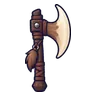 ขวานเขี้ยวหมูป่า | 0.25% |
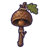 กระดิ่งวิญญาณหมวกลูกโอ๊ก | 0.25% |
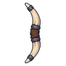 ธนูเขี้ยวหมูป่า | 0.25% |
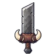 ดาบใหญ่ใบกว้าง | 0.25% |
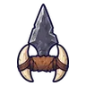 คาทาร์งาหมูป่า | 0.25% |
| สนับมือเขี้ยวหมูป่า | 0.25% |
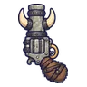 ปืนพกคู่เขี้ยวหมูป่า | 0.25% |
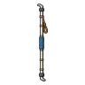 ไม้พลองเสาเต็นท์ | 0.25% |
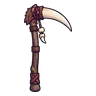 เคียวใหญ่เขี้ยวหมูป่า | 0.25% |
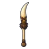 หอกเขี้ยวหมูป่า | 0.25% |
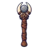 คทางาหมูป่า | 0.25% |
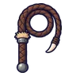 แส้หนังหมูป่า | 0.25% |
| หมวกกัปตันโจรสลัด | 0.08% |
สกิล
ทุบพื้น (Lv 25+) · ทุบพื้น (Lv 60+) · ร่างแข็ง (Lv 60+)